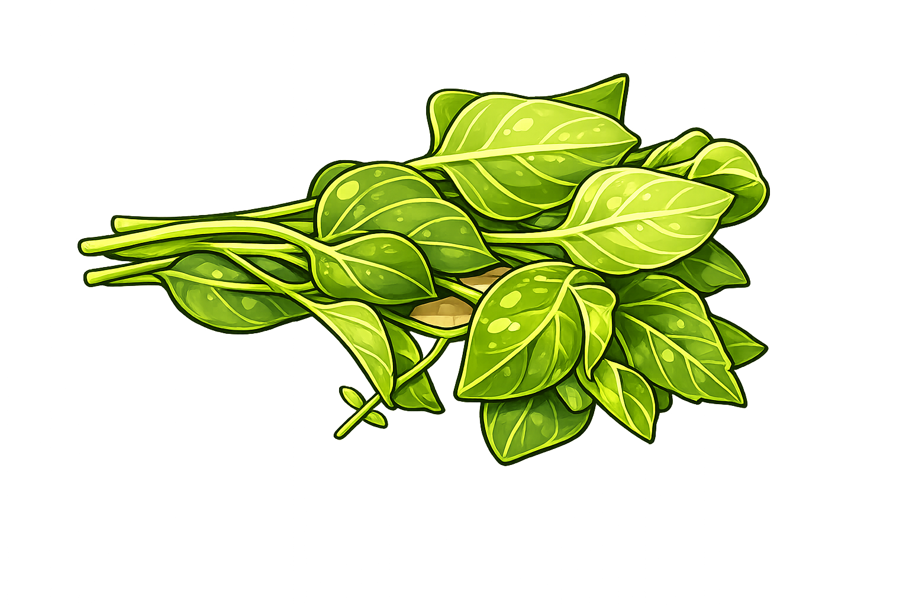
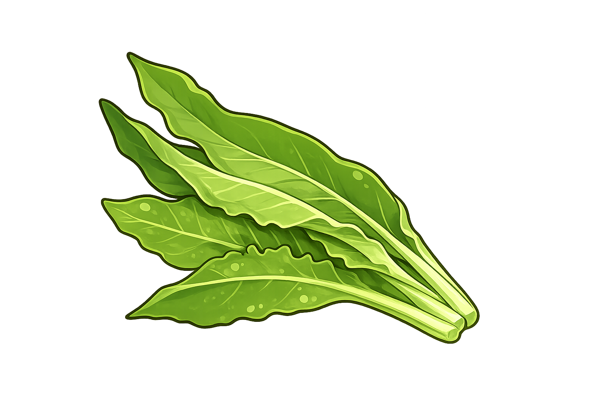
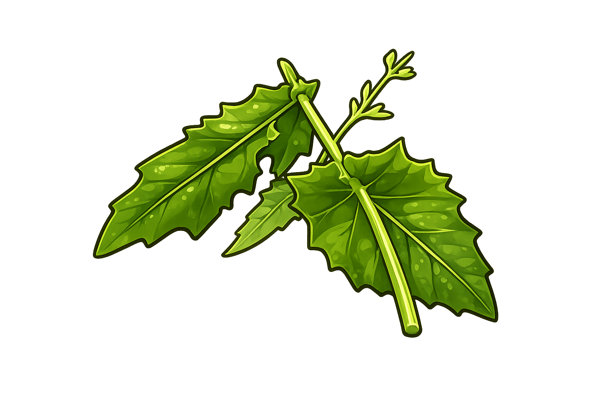
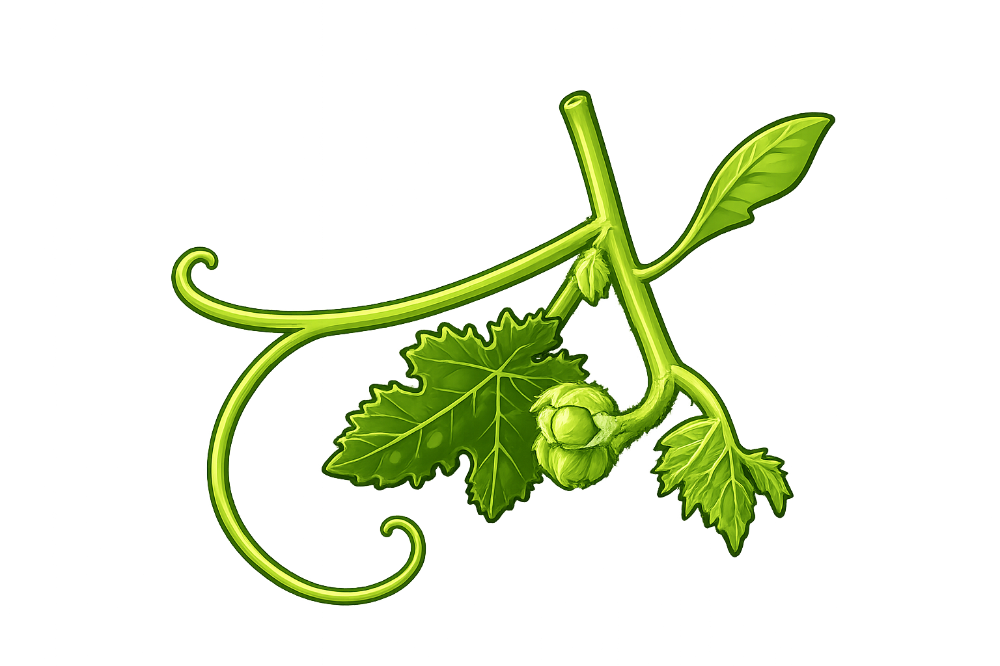

資料來源
本遊戲內容整理自土坂部落田野踏查、訪談紀錄及相關文獻，部分內容經簡化呈現， 僅供教育推廣使用。本遊戲以教育推廣為目的，內容主要依據土坂部落田野訪談與資料整理製作。 若有不足之處，歡迎提供建議與指正，共同保存與傳承部落飲食文化。
搖搖飯料理屋
你可以先認識搖搖飯會用到的野菜，也可以進入目前的料理遊戲版本， 閱讀故事後站上吧檯完成客人的訂單。
關於
感謝土坂部落頭目、長者、餐廳、青年傳唱隊等接受訪談並分享文化知識。 （可依實際受訪者填寫姓名。）
本遊戲內容整理自土坂部落田野踏查、訪談紀錄及相關文獻，部分內容經簡化呈現， 僅供教育推廣使用。本遊戲以教育推廣為目的，內容主要依據土坂部落田野訪談與資料整理製作。 若有不足之處，歡迎提供建議與指正，共同保存與傳承部落飲食文化。
我要認識野菜
這裡會放你之後提供的詳細介紹。現在先保留五種野菜的入口卡片。

1kamutu
葉子的正面是綠色，背面則是鮮豔的紫色，因此得名「紫背草」。口感柔嫩，帶有淡淡青草香，常用來煮湯、炒菜或加入搖搖飯，不僅能增添色彩，也富含多種營養。
tjanaq
刺蔥是一種具有濃郁香氣的原生植物，嫩葉散發獨特的柑橘與辛香味，被稱為「山林的香料」。許多原住民族都會使用它來調味，無論配肉、煎蛋或煮湯都十分美味。

3samaq
山萵苣是一種常見的山野植物，嫩葉鮮嫩爽口，帶有淡淡苦味，川燙後可涼拌、炒食或煮湯。許多部落會依照季節採集，是傳統飲食文化中重要的野菜之一。

4qaudriudri
昭和草生長快速，在田邊、山坡都很常見。嫩葉可以食用，口感柔軟，帶有微微苦味，川燙後再炒或煮湯最為常見。以前也是許多人餐桌上的野菜。

5ludus
除了南瓜果實之外，南瓜的新芽和嫩葉也能食用。去除葉梗外層細毛後，口感柔嫩清甜，常加入湯品或野菜料理，是許多部落家庭常見的食材。
歷史
兩分鐘限時挑戰
挑戰結束
自由製作
這裡不倒數、不計分。選擇自己喜歡的菜量，完成一碗自己的搖搖飯。